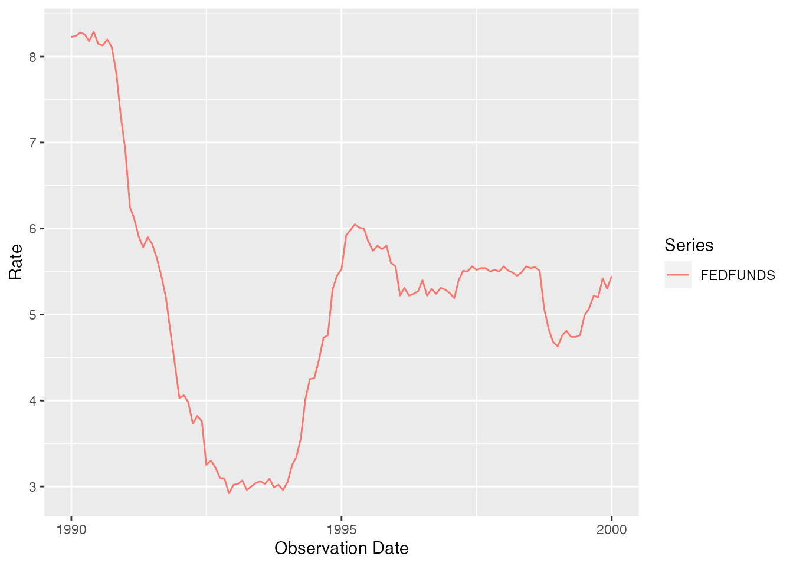
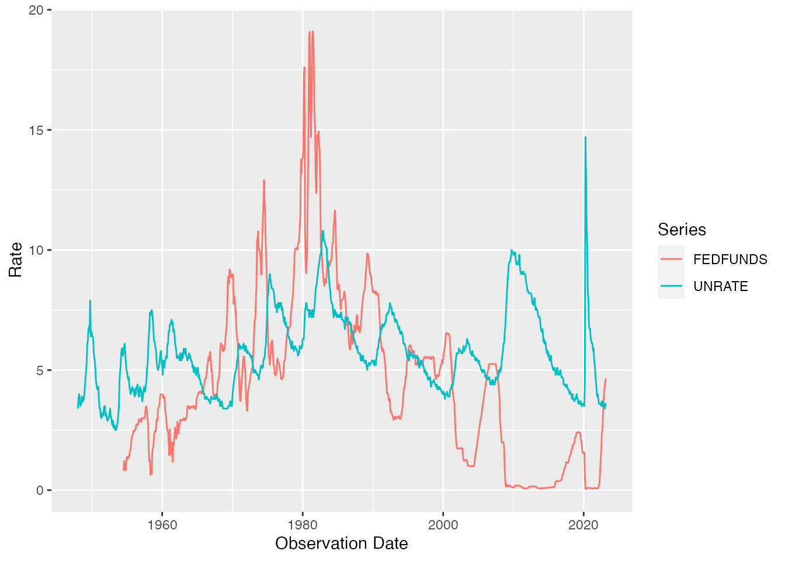
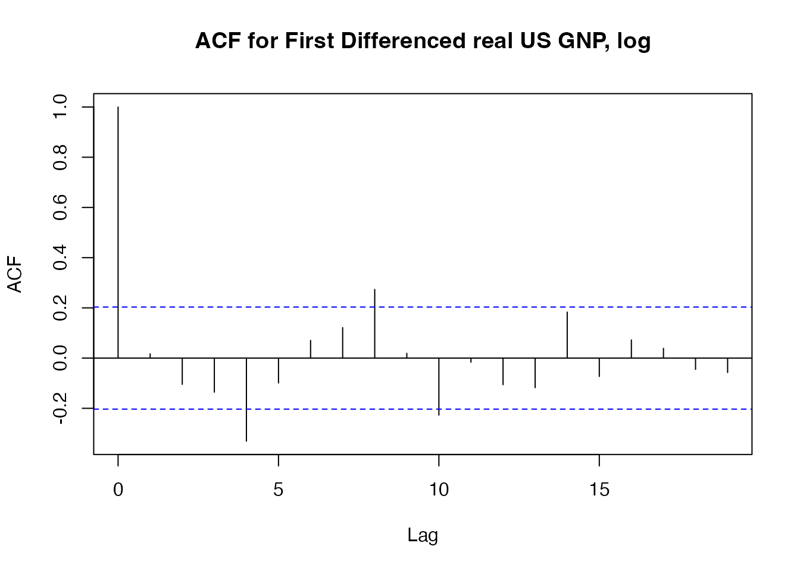

fredr provides a complete set of R bindings to the Federal Reserve of Economic Data (FRED) RESTful API, provided by the Federal Reserve Bank of St. Louis. The functions allow the user to search for and fetch time series observations as well as associated metadata within the FRED database.
The core function in this package is fredr(), which fetches observations for a FRED series. That said, there are many other FRED endpoints exposed through fredr, such as fredr_series_search_text(), which allows you to search for a FRED series by text.
We strongly encourage referencing the FRED API documentation to leverage the full power of fredr.
To use fredr and the FRED API in general, you must first obtain a FRED API key. It is also recommended to review the FRED API Terms of Use.
Once you’ve obtained an API key, the recommended way to use it is to set the key as an environment variable: FRED_API_KEY . The easiest way to do that is by calling usethis::edit_r_environ() to open a .Renviron file. Once the file is open set the key as:
FRED_API_KEY=abcdefghijklmnopqrstuvwxyz123456where the key has been replaced by the one you received from FRED. Don’t forget to restart R after saving and closing the .Renviron file.
Alternatively, you can set an API key for the current R session with fredr_set_key() like so:
fredr_set_key("abcdefghijklmnopqrstuvwxyz123456")Again, this will only set the key for the current R session, and it is recommended to use an environment variable.
fredr() (an alias for fredr_series_observations()) retrieves series observations (i.e. the actual time series data) for a specified FRED series ID. The function returns a tibble with 3 columns (observation date, series ID, and value).
fredr(
series_id = "UNRATE",
observation_start = as.Date("1990-01-01"),
observation_end = as.Date("2000-01-01")
)
#> # A tibble: 121 × 5
#> date series_id value realtime_start realtime_end
#> <date> <chr> <dbl> <date> <date>
#> 1 1990-01-01 UNRATE 5.4 2021-08-02 2021-08-02
#> 2 1990-02-01 UNRATE 5.3 2021-08-02 2021-08-02
#> 3 1990-03-01 UNRATE 5.2 2021-08-02 2021-08-02
#> 4 1990-04-01 UNRATE 5.4 2021-08-02 2021-08-02
#> 5 1990-05-01 UNRATE 5.4 2021-08-02 2021-08-02
#> 6 1990-06-01 UNRATE 5.2 2021-08-02 2021-08-02
#> 7 1990-07-01 UNRATE 5.5 2021-08-02 2021-08-02
#> 8 1990-08-01 UNRATE 5.7 2021-08-02 2021-08-02
#> 9 1990-09-01 UNRATE 5.9 2021-08-02 2021-08-02
#> 10 1990-10-01 UNRATE 5.9 2021-08-02 2021-08-02
#> # … with 111 more rowsLeverage the native features of the FRED API by passing additional parameters:
fredr(
series_id = "UNRATE",
observation_start = as.Date("1990-01-01"),
observation_end = as.Date("2000-01-01"),
frequency = "q", # quarterly
units = "chg" # change over previous value
)
#> # A tibble: 41 × 5
#> date series_id value realtime_start realtime_end
#> <date> <chr> <dbl> <date> <date>
#> 1 1990-01-01 UNRATE -0.0667 2021-08-02 2021-08-02
#> 2 1990-04-01 UNRATE 0.0333 2021-08-02 2021-08-02
#> 3 1990-07-01 UNRATE 0.367 2021-08-02 2021-08-02
#> 4 1990-10-01 UNRATE 0.433 2021-08-02 2021-08-02
#> 5 1991-01-01 UNRATE 0.467 2021-08-02 2021-08-02
#> 6 1991-04-01 UNRATE 0.233 2021-08-02 2021-08-02
#> 7 1991-07-01 UNRATE 0.0333 2021-08-02 2021-08-02
#> 8 1991-10-01 UNRATE 0.233 2021-08-02 2021-08-02
#> 9 1992-01-01 UNRATE 0.267 2021-08-02 2021-08-02
#> 10 1992-04-01 UNRATE 0.233 2021-08-02 2021-08-02
#> # … with 31 more rowsfredr plays nicely with tidyverse packages:
library(dplyr)
library(ggplot2)
popular_funds_series <- fredr_series_search_text(
search_text = "federal funds",
order_by = "popularity",
sort_order = "desc",
limit = 1
)
popular_funds_series_id <- popular_funds_series$id
popular_funds_series_id %>%
fredr(
observation_start = as.Date("1990-01-01"),
observation_end = as.Date("2000-01-01")
) %>%
ggplot(data = ., mapping = aes(x = date, y = value, color = series_id)) +
geom_line() +
labs(x = "Observation Date", y = "Rate", color = "Series")
Since fredr() returns a tibble with a series ID, mapping fredr() over a vector of series IDs can be achieved as follows:
library(purrr)
map_dfr(c("UNRATE", "FEDFUNDS"), fredr) %>%
ggplot(data = ., mapping = aes(x = date, y = value, color = series_id)) +
geom_line() +
labs(x = "Observation Date", y = "Rate", color = "Series")
Using purrr::pmap_dfr() allows you to use varying optional parameters as well.
params <- list(
series_id = c("UNRATE", "OILPRICE"),
frequency = c("m", "q")
)
pmap_dfr(
.l = params,
.f = ~ fredr(series_id = .x, frequency = .y)
)
#> # A tibble: 1,153 × 5
#> date series_id value realtime_start realtime_end
#> <date> <chr> <dbl> <date> <date>
#> 1 1948-01-01 UNRATE 3.4 2021-08-02 2021-08-02
#> 2 1948-02-01 UNRATE 3.8 2021-08-02 2021-08-02
#> 3 1948-03-01 UNRATE 4 2021-08-02 2021-08-02
#> 4 1948-04-01 UNRATE 3.9 2021-08-02 2021-08-02
#> 5 1948-05-01 UNRATE 3.5 2021-08-02 2021-08-02
#> 6 1948-06-01 UNRATE 3.6 2021-08-02 2021-08-02
#> 7 1948-07-01 UNRATE 3.6 2021-08-02 2021-08-02
#> 8 1948-08-01 UNRATE 3.9 2021-08-02 2021-08-02
#> 9 1948-09-01 UNRATE 3.8 2021-08-02 2021-08-02
#> 10 1948-10-01 UNRATE 3.7 2021-08-02 2021-08-02
#> # … with 1,143 more rowsIt is relatively straightforward to convert tibbles returned by fredr into other time series objects. For example:
library(xts)
gnpca <- fredr(series_id = "GNPCA", units = "log") %>%
mutate(value = value - lag(value)) %>%
filter(!is.na(value))
gnpca_xts <- xts(
x = gnpca$value,
order.by = gnpca$date
)
gnpca_xts %>%
StructTS() %>%
residuals() %>%
acf(., main = "ACF for First Differenced real US GNP, log")
fredr implements functions for all FRED API endpoints. For usage examples for these functions, please consult the relevant vignette:
Finally, fredr is packaged with a list of possible endpoints in the tibble named fredr_endpoints:
fredr_endpoints
#> # A tibble: 31 × 3
#> endpoint type note
#> <chr> <chr> <chr>
#> 1 fred/category Categories Get a category
#> 2 fred/category/children Categories Get the child categories for a specifi…
#> 3 fred/category/related Categories Get the related categories for a categ…
#> 4 fred/category/series Categories Get the series in a category
#> 5 fred/category/tags Categories Get the tags for a category
#> 6 fred/category/related_tags Categories Get the related tags for a category
#> 7 fred/releases Releases Get all releases of economic data
#> 8 fred/releases/dates Releases Get release dates for all releases of …
#> 9 fred/release Releases Get a release of economic data
#> 10 fred/release/dates Releases Get release dates for a release of eco…
#> # … with 21 more rowsTo get the most out of the native features of the FRED API, it is highly recommended to review the API endpoint documentation. Within an R session, you can quickly access the web documentation with the convenience function fredr_docs().
You can also use the low-level function fredr_request() to run more general queries against any FRED API endpoint (e.g. Categories, Series, Sources, Releases, Tags). The required parameter is endpoint (see fredr_endpoints for a list of valid endpoints) and then all API parameters are passed through as named arguments. For example:
fredr_request(
endpoint = "tags/series",
tag_names = "population;south africa",
limit = 25L
)
#> # A tibble: 25 × 16
#> id realtime_start realtime_end title observation_sta… observation_end
#> <chr> <chr> <chr> <chr> <chr> <chr>
#> 1 LFWA24TTZAA647N 2021-08-02 2021-08-02 Work… 2008-01-01 2020-01-01
#> 2 LFWA24TTZAA647S 2021-08-02 2021-08-02 Work… 2008-01-01 2020-01-01
#> 3 LFWA24TTZAQ647N 2021-08-02 2021-08-02 Work… 2008-01-01 2021-01-01
#> 4 LFWA24TTZAQ647S 2021-08-02 2021-08-02 Work… 2008-01-01 2021-01-01
#> 5 LFWA25TTZAA647N 2021-08-02 2021-08-02 Work… 2008-01-01 2020-01-01
#> 6 LFWA25TTZAA647S 2021-08-02 2021-08-02 Work… 2008-01-01 2020-01-01
#> 7 LFWA25TTZAQ647N 2021-08-02 2021-08-02 Work… 2008-01-01 2021-01-01
#> 8 LFWA25TTZAQ647S 2021-08-02 2021-08-02 Work… 2008-01-01 2021-01-01
#> 9 LFWA55TTZAA647N 2021-08-02 2021-08-02 Work… 2008-01-01 2020-01-01
#> 10 LFWA55TTZAA647S 2021-08-02 2021-08-02 Work… 2008-01-01 2020-01-01
#> # … with 15 more rows, and 10 more variables: frequency <chr>,
#> # frequency_short <chr>, units <chr>, units_short <chr>,
#> # seasonal_adjustment <chr>, seasonal_adjustment_short <chr>,
#> # last_updated <chr>, popularity <int>, group_popularity <int>, notes <chr>By default, fredr_request() will return a tibble. Set to_frame to FALSE to return a generic response object from a httr::GET() request that can be further parsed with httr::content():
fredr_request(
endpoint = "series/observations",
series_id = "UNRATE",
to_frame = FALSE
)
#> Response [https://api.stlouisfed.org/fred/series/observations?series_id=UNRATE&api_key=a1dfde330d2d15991130fc103b3f7a2c&file_type=json]
#> Date: 2021-08-02 12:12
#> Status: 200
#> Content-Type: application/json; charset=UTF-8
#> Size: 83.2 kB